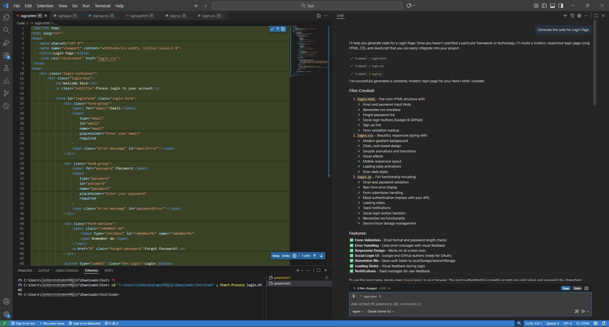

Maximizing Developer Productivity with GitHub Copilot
Setup steps, key benefits, and best practices
- Introduction
- How to set up GitHub Copilot
- Practical applications
- Advantages of using GitHub Copilot
- Best practices for adoption
- The future of AI in development
Introduction
GitHub Copilot is an AI-powered coding assistant designed to help developers write code faster, with more accuracy, and with less manual effort. Built by GitHub in collaboration with OpenAI, Copilot integrates directly into popular development environments such as Visual Studio Code, Visual Studio, JetBrains IDEs, and accessible tools like Copilot Chat. It uses large language models trained on billions of lines of publicly available code and natural language to provide real-time suggestions, autocompletions, code snippets, test cases, documentation, and more—based on the context of what the developer is working on.
In practice, it:
- Suggests lines or blocks of code as you type in your IDE based on context.
- Lets users interact in natural language (chat) to ask for explanations, help, or code modifications.
- Supports multiple languages and integrates into popular editors (e.g., VS Code, JetBrains, etc.).
Why it's gaining traction
- Productivity boost: Developers can shift more time from repetitive code to higher-value tasks. GitHub’s documentation claims such benefits.
- Lower barrier for new or unfamiliar code: If you’re exploring a new library, language or framework, Copilot can help you get started faster rather than digging through docs and examples.
- Integration & ecosystem: Because it’s deeply integrated into GitHub & familiar IDEs, the barriers to adopt are relatively low.
- Context awareness: It uses your current code context (variables, imports, and comments) to generate smarter suggestions rather than generic autocomplete.
- Growing maturity of AI models: As large language models get better at code generation and reasoning, tools like Copilot become more useful.
Accelerating development and improving productivity
| Accelerates Development | Improves Productivity | Real-World Impact |
|---|---|---|
|
|
|
AI-powered capabilities
GitHub Copilot is an AI-powered coding assistant developed by GitHub in collaboration with OpenAI. It integrates directly into popular development environments such as Visual Studio Code, JetBrains IDEs, and Visual Studio, acting as a real-time pair programmer.
Copilot uses advanced machine learning models (based on OpenAI’s Codex and GPT family) trained on vast amounts of publicly available source code. It helps developers write, understand, and modify code faster by offering intelligent suggestions directly in the editor.
- Context-Aware Code Suggestions
- Understands the current file, function, and comments to suggest full lines or blocks of code.
- Learns from variable names, imported libraries, and the project’s structure for relevant, high-quality completions.
-
Natural Language to Code
- Developers can write comments in plain English, and Copilot translates them into working code.
- Enables faster experimentation by reducing the need to write boilerplate code manually.
-
Multi-Language Support
- Works across dozens of languages — including Python, JavaScript, TypeScript, Java, C#, Go, SQL, and more.
- Adapts its style to the coding conventions of the language or project.
-
Code Refactoring and Explanation
- Can rewrite or optimize existing code for better readability or efficiency.
- Explains code snippets in plain English, helping developers quickly understand unfamiliar logic.
-
Error Prevention and Best Practices
- Suggests syntax-correct, logically consistent code based on patterns learned from millions of repositories.
- Reduces trivial bugs and repetitive mistakes in everyday coding.
-
Chat-Based Assistance (Copilot Chat)
-
Offers an interactive chat experience inside the IDE — developers can ask:
- “What does this function do?”
- “Can you optimize this loop?”
- “Write unit tests for this module.”
- The AI provides actionable code and explanations in real time.
-
Offers an interactive chat experience inside the IDE — developers can ask:
How to set up GitHub Copilot
Pre-requisites
- GitHub account
- IDE
- Visual Studio Code (VS Code)
- Visual Studio 2022 (v17.6+)
- JetBrains IDEs (e.g., IntelliJ, PyCharm, WebStorm)
Installation Steps
- Open VS Code
- Go to the Extensions Marketplace
- Search for “GitHub Copilot”
- Click Install
- Publisher: GitHub
- Icon: Green + blue Copilot logo
- After installation, click “Sign in to GitHub” when prompted
- VS Code will open a browser window
- Authorize VS Code to connect to your GitHub account
- Enable Copilot
- Once signed in you’ll see a popup: “Would you like to enable GitHub Copilot?” → Click “Enable”
- Start Using Copilot → Open a file (e.g., .py, .js, .java, .sql)
- You should see something like this:
- Some useful commands you can try:
- /tests - Generate unit tests for the selected code
- /simplify - Simplify the selected code
- /fix - Propose a fix for the problems in the selected code
- /explain - Explain step-by-step how the selected code works
Configuration Tips: GitHub Copilot Chat (for Q&A inside IDE)
- In VS Code extensions, search “GitHub Copilot Chat”
- Install and enable it
- Open the Chat panel to ask natural-language questions like:
- “Explain this function”
- “Generate SQL for customer revenue report”
Practical applications
Design and progress tracking
| Scenarios | Use Case | Description |
|---|---|---|
| Use Case 1: Design | Design and create approach documents |
Utilizing Mermaid tool with GHCP to create dependency diagrams. Impact: Optimized migration workflow and enhanced process efficiency. |
| Use Case 2: Progress Tracking | Feature Vetting |
Analyze the current progress of ADO items by fetching and evaluating the linked child items. Impact: Summarized view with detailed progress on active items. |
Code
| Scenarios | Description |
|---|---|
| Use Case 3: Code Optimization | Problem Statement The existing implementation for handling OData queries—such as count, aggregate, and other complex operations—was becoming difficult to maintain. Code was tightly coupled, lacked modular structure, and documentation was minimal. This resulted in:
Approach Used Copilot with the prompt below: “I'm using OData client 7.20, and want to create implementation for count, aggregate and other complex queries in context of the Test Cases created.
|
| Use Case 4: Code Analysis |
Problem Statement While developing new controllers for an existing React codebase, manually reviewing large files (e.g., LineItem) to understand component structure, controller usage, and data flow was time-consuming. Additionally, identifying how data returned by fetchFunction_apiFetch was being passed into component props required extensive exploration of the code. These tasks slowed down development and increased cognitive load during onboarding and feature creation. Approach Used Copilot with the prompt below: “1. I'm developing new controllers for the pre-existing code. I want to identify all the React controllers present in Impact
|
| Use Case 5: Initial dev changes and validation |
Problem Statement The existing grid selection and export behavior had functional gaps:
These issues created poor user experience, inconsistent data handling, and additional manual effort for users performing multi-page selections or exports. Approach Used Copilot with the prompt below: “Enhance use Grid Row to persist selection across pages using a Set Update Export Button to always export the full dataset in CSV/Excel with bold, center-aligned headers and left-aligned row data—regardless of selection. Pass global Selected Rows and current page selection from use grid row to nested data grid and custom grid toolbar to reflect consistent selection and export behavior.” Impact
|
| Use Case 6: Code Review |
Problem Statement The grid system had multiple independent subcomponents (toolbar, nested grid, row selection logic, export utilities, pagination handlers, etc.) that were difficult to visualize and validate as a complete experience. Additionally, several large-scale updates to the nested grid architecture required thorough review to ensure proper integration, performance stability, and UI/UX consistency. Without a unified environment:
Approach Used Copilot with the prompt below: “Assemble and integrate all grid subcomponents into a full-featured Storybook page. Review and refine large-scale nested grid changes” Impact
|
Testing
| # | Scenario | Efficiency gain* |
|---|---|---|
| Use Case 7 | Unit Testing | 75% |
| Use Case 8 | UI Testing | 60% |
| Use Case 9 | Accessibility Testing | 70% |
| Use Case 10 | Creation of API test cases | 100% |
| Use Case 11 | Creation of test cases in qTest | 33% |
| Use Case 12 | API testing using Locust | 80% |
Documentation
Use Case 13: Creation of training material
Problem Statement: Creating consistent, high-quality talk scripts, PPT content, and documentation was time-consuming and varied in tone and structure.
AI-Driven Approach: Leveraged GitHub Copilot to streamline content creation and standardize communication.
Key Scenarios:
- Session structuring: AI helped identify and group topics, ensuring logical flow across 8 modules and balanced session durations
- Talk tracks and training content: AI-generated delivery scripts, transitions, and Q&A prompts → ~60% prep time saved
- Presentation slides: Auto-drafted slide text, benefit statements, and “Why it matters” notes → Clearer storytelling
- Emails and communication: Rewrote updates and announcements → Consistent tone & faster approvals
- Learning references: Curated relevant articles, Microsoft docs, and community links for each topic — later embedded in PPTs for audience takeaways
Use Case 14: Documenting change logs
Problem Statement: During the SDLC, changes occur across requirements, design, architecture, code, and configurations. Without a standardized mechanism to capture these changes, it becomes difficult to:
- Trace what changed and why
- Assess downstream impact
- Support audits, compliance, and release validation
Approach: Implement a centralized change log mechanism that:
- Records every approved change with context (reason, scope, impact)
- Links changes to SDLC artifacts (requirements, design docs, code repositories)
- Maintains version history and approval status
Use Case 15: Approach/Design documents
Problem Statement: New features, enhancements, or system changes are often initiated without a clearly documented approach or design. This can lead to:
- Misaligned understanding of scope and architecture
- Late-stage rework due to unclear decisions
- Inconsistent implementation across the SDLC
Approach: Create a standardized approach/design document that:
- Defines functional and non-functional scope
- Describes high-level and detailed architecture
- Documents key design decisions, assumptions, and constraints
- Serves as a single source of truth across the SDLC
Use Case 16: Flow diagrams
Problem Statement: Complex systems involve multiple components, integrations, and data flows. Text-heavy documentation alone makes it difficult to:
- Visualize end-to-end system behavior
- Understand component interactions
- Perform impact analysis for changes
Approach: Develop architecture-focused flow diagrams that:
- Visually represent component interactions and data flow
- Illustrate request/response paths and integration points
- Highlight key processing steps and dependencies
- Complement design documents for faster comprehension
Other use cases
- Repetitive tasks:
GitHub Copilot is highly effective for automating repetitive development tasks such as writing boilerplate code, CRUD operations, data models, and configuration files. Developers can rely on Copilot to quickly generate standard patterns, reducing manual effort and minimizing errors. This allows teams to focus more on business logic rather than routine implementation. It is especially useful in large projects where similar code patterns appear across multiple modules. - Rapid prototyping:
Copilot enables fast prototyping by converting natural language descriptions into working code. Developers can quickly create proof-of-concepts, UI components, API endpoints, or workflows without spending excessive time on setup. This speeds up experimentation and validation of ideas, making it easier to gather early feedback from stakeholders. Rapid prototyping helps teams iterate faster and de-risk solutions early in the development cycle. - Learning new languages:
When working with unfamiliar languages or frameworks, Copilot acts as an intelligent learning companion. It provides syntax suggestions, sample implementations, and best-practice patterns in real time. Developers can learn by observing generated examples and refining them, rather than constantly referring to external documentation. This reduces the learning curve and accelerates productivity in new technology stacks.
Advantages of using GitHub Copilot
-
Boosts productivity
- Provides real-time suggestions as you type.
- Minimizes context-switching between documentation and coding.
- Lets developers stay focused on logic rather than syntax.
-
Enhances learning for developers
- Acts as an interactive tutor for junior developers.
- Shows alternative ways to write code.
- Helps explore unfamiliar libraries, frameworks, or languages.
-
Improves code quality
- Suggests well-structured, consistent, and syntactically correct code.
- Helps maintain naming standards and coding patterns across the project.
- Reduces human errors in repetitive code segments.
-
Strengthens testing
- Auto-generates unit tests, API test cases, and automation scripts.
- Improves test coverage with minimal manual effort.
- Supports frameworks like pytest, JUnit, Selenium, and Locust.
-
Seamless integration with IDEs
- Works inside VS Code, Visual Studio, JetBrains, and GitHub.
- Fits naturally into existing workflows without extra tools.
-
Supports multiple languages and frameworks
- Works across dozens of programming languages.
- Adapts to your tech stack automatically.
- Useful for backend, frontend, DevOps, data, and test engineers.
Best practices for adoption
-
Use Copilot as an assistant, not a replacement.
GitHub Copilot is designed to support developers, not replace them. It accelerates repetitive coding but cannot:- Understand business logic or project-specific rules.
- Make architectural or design decisions.
- Ensure compliance or performance optimization.
Treat Copilot like a pair programmer — let it handle suggestions, but not the final decision-maker for design, structure, and correctness. -
Make your prompt more relevant.
Copilot may not understand the full requirement, so be explicit in your request. Share examples and provide specific instances if you want the output to better match your needs. Dig deeper by asking follow-up questions and making modifications as needed. Remember: the first response may not always be the accurate answer you’re looking for.
 -
Always review and test generated code.
Copilot’s suggestions come from patterns in public code, not your project’s exact needs. This means the generated code might:- Contain logical or security errors.
- Be inefficient or non-compliant with internal standards.
- Miss edge cases or error handling.
Always review, debug, and test Copilot-generated code before merging. Treat its output as a draft, not production-ready code. -
Supplement with code reviews and static analysis tools.
While Copilot speeds up writing code, human and automated quality checks remain essential.- Use peer code reviews to validate logic and maintain coding consistency.
- Use static analysis tools (like SonarQube, ESLint, or CodeQL) to detect:
- Security vulnerabilities
- Style violations
- Performance or maintainability issues
Integrate Copilot usage into your standard CI/CD quality gates — automation and review together ensure safe, reliable code. -
Educating teams on ethical and secure usage
Copilot can generate code influenced by open-source data. Without awareness, developers might:- Accidentally reuse licensed or proprietary code.
- Expose confidential business logic in prompts.
- Implement solutions that mishandle sensitive data.
-
Conduct Copilot awareness sessions to teach teams:
- When and how to use Copilot safely.
- Data privacy guidelines (never paste secrets or client data).
- Copyright and open-source license awareness.
- Secure coding practices (e.g., avoid hardcoded credentials).
A brief caveat
- Some generated codes may have bugs or security issues.
- You still need to review, test and understand what’s being suggested — it’s an assistant, not a fully autonomous coder.
- For niche domains or very complex logic, its performance may drop.
The future of AI in development
AI-powered coding assistants such as GitHub Copilot are fundamentally transforming how software is built. By automating repetitive tasks, generating high-quality code suggestions, and accelerating problem-solving, these tools allow developers to focus more on design, architecture, and innovation rather than boilerplate implementation. They enhance productivity, reduce onboarding time, and democratize access to best practices—making advanced development techniques more accessible even to junior engineers.
Tools like GitHub Copilot are rapidly shaping the future of software engineering by transforming how developers write, review, and understand code. With intelligent code suggestions, automated documentation, and context-aware assistance, Copilot significantly accelerates development while improving quality and consistency. Its newer capabilities—such as Copilot Chat for interactive debugging and architectural guidance, and deeper integrations with OpenAI models—are pushing AI-assisted development into more conversational, problem-solving territory. As these tools continue to evolve with features like advanced code refactoring, AI-driven test generation, and multi-modal understanding, they are redefining developer workflows and enabling teams to build complex software faster, more reliably, and with far greater efficiency than before.
As organizations integrate AI deeper into their development workflows, software engineering is shifting toward a more collaborative, intelligent, and efficiency-driven model, where developers and AI work together to deliver faster, more reliable, and more maintainable software.

Power BI Copilot Best Practice Guide
Build AI-ready semantic models with Power BI Copilot
Read More →